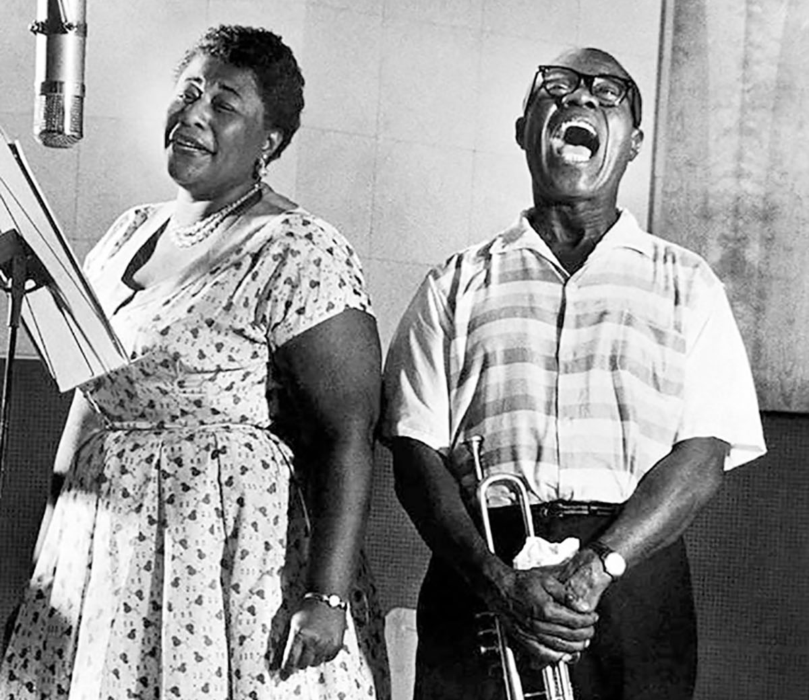

Remembering Ella Fitzerald: A conversation from 34 Years Ago
Tonight, Fitzgerald – accompanied by the Paul Smith Trio and guitarist Joe Pass – will perform at Ruth Eckerd Hall at 8 p.m. Late Thursday. there were fewer than three dozen tickets still available.
In an animated telephone interview Thursday morning, the “A-Tisket, A-Tasket” lady, now 67, remembers old friends such as Louis and Duke, retells her beginnings as the “girl singer” with the Chick Webb Orchestra and says she really did break that glass in the famous Memorex tape (“Is it real or is it Memorex?”) commercials.
QUESTION: Is this actually your 50th anniversary in show business?
ELLA FITZGERALD: Well, I guess it’s near it. I don’t count ’em.
Q: Do you find it hard to believe that you’ve been performing that many years?
ELLA: No. I started very young. To be in it this long and still have people want to hear you, I guess I’ve never taken the time to realize how many years it’s been.
Q: A lot of times, we wait until people are not with us any longer to pay tribute to them, to put people up on pedestals. But you’ve had that happen during your career for a long time now. Does that humble you at all?
ELLA: I’m always humble. You meet more people that way. We’re all human. One has one profession, one has another, and it takes one to make the other. I’d always been told that by the late, great Chick Webb. He used to tell me. ‘You meet the same people going up that you meet coming down,’ and I always try to remember things like that.
Q: How much credit does Chick Webb deserve for the way your career took off?
ELLA: Well, at first he didn’t want a girl singer. Then he heard me sing on the Amateur Hour. He took me with him to Yale. That was my first gig. He said if they like me there, then I had a job. I could only sing three songs.
Q: Do you remember what the songs were?
ELLA: “Object of My Affection,” “Judy” and “Believe It, Beloved.” I had one amateur contest – those were the only three songs I knew.
Q: How did you do in the contest?
ELLA: I won first prize! After Chick died, I went with different groups. But I really feel much of my success in the ’50s started when I went with Norman Granz. He felt there was something else to my voice besides just singing bop. He decided to do the song books – Cole Porter, Gershwin, Rodgers and Hart. It was like a new beginning. He has guided me all these years; he’s still my manager.
Q: All the great producers and band leaders you’ve worked with over the years – have they had particular effects on different parts of your career?
ELLA: I always feel that working with bands, that’s how I’ve learned my music. I never studied music, but I feel that the kind of musicians I’ve worked with have always been truthful to me. The great Count Basie – I called him one of my lawyers. And, of course, Duke Ellington, the Chick Webb band . . . All influenced me because they always said, ‘Fitz, I don’t like that song,’ or ‘You’re not singing that right.’ To me, that was like getting an education.

Q: You also worked with Louis Armstrong.
ELLA: oh, yeah!
Q: Do you remember your first impression of him?
ELLA: I was just thrilled. I messed up some records, because when we recorded I was so busy listening to him and lookin’ at him because the way that he would sing on stage, he would do the same thing while he was recording. I’d forget to come in, I’d be watchin’ him! He was just Louis. Just for real. I think that’s been one of the great things of all the people I’ve worked with. They’re all real people, no put-on.
Q: You worked with Nelson Riddle before his death.
ELLA: Yes, we did the Hollywood Bowl.
Q: How does he compare with the other band leaders you’ve worked with?
ELLA: Well, he was not a band leader with me. He was more of an arranger. He did a lot of my music. We did some concerts in London for the needy children. We did the one at the Hollywood Bowl. Most of the things with Nelson were recordings. He was just beautiful. I don’t know where I’m going to get that kind of music for future songs.
Q: You have a very active recording career. Where do you find songs these days? Are there new songs being written, or do you have to go back to the older songs and do new arrangements?
ELLA: What I try to do is mix my songs. We’ve found from traveling that I have a mixed audience. Even some of the young ones, they like the Cole Porters, the Gershwins. They ask more for that than a lot of the things that are happening today. I try to put some of the songs of the day in, but I try to do the songs that I think fit me. Like, I have a Carly Simon, and I do some Paul Williams sometimes. They’re tunes that I like, and I think they’re beautiful.
“I’m always humble. You meet more people that way. We’re all human. One has one profession, one has another, and it takes one to make the other. I’d always been told that by the late, great Chick Webb. He used to tell me. ‘You meet the same people going up that you meet coming down,’ and I always try to remember things like that.”
Q: Who do you think is the greatest songwriter of all time?
ELLA: That’s a hard Question to answer. I think it’s hard to say who you think is the greatest because there are certain songs that certain composers write that you feel nobody else could touch. There’s Duke – the type of songs that Duke wrote, you wouldn’t expect anyone else write those kinds of songs. There are certain lyrics and tunes that Gershwin wrote that you wouldn’t expect anyone else to do. Rodgers and Hart, there are things that Harold Arlen does … It’s very hard. I even love some of the things the Beatles did. I think “Yesterday” and “Something” are tunes that will be standards.
Q: What writer makes you work the hardest and is the most satisfying?
ELLA: (She pauses.) I never thought of it that way. I love my Gershwins, but I guess that’s because that was one of the most popular ones. But then Cole Porter … There’s certain areas of the country, we have different composers that people like. Now when we play England, I must do Cole Porter. I have a tune that never became popular in the States – “Every Time We Say Goodbye.” Anywhere in tile United States if somebody asks for it, I know they’re from England. When we played Daytona Beach, there were some people from London, and they were so disappointed because I didn’t sing “Every Time We Say Goodbye,” but I didn’t know they were there. That’s a tune that’s been popular for me for the last 20 years in London. They even close a disco at night with “Every Time We Say Goodbye.” When we play Italy and France, it’s always Paganini.
Q: How do you warm up for a program?
ELLA: I never warm up. I just go ahead and try to sing. We have (guitarist) Joe Pass. When we’re together, sometimes he comes in the room, and we just start singing our tunes that we’re going to do. Unfortunately, since we’ve been playing pear ‘the water, my sinus gives me a little trouble.
Q: When you were first approached to do the Memorex commercial, did you have any idea that it would become such an institution?
ELLA: No. but I’m very happy that it did. They auditioned me at the Algonquin in New York. I was wondering what the men wanted when they put two glasses in the fireplace, and they asked me to sing. I’ll never forget it. They asked me to do the ending of “How High the Moon.” I just kept singing, “Higher, higher the moon,” doing the ending. And when the glass broke, they said, ‘That’s the one!’ Then I got the job. I have so many young children who just love me for the Memorex commercial! “You’re the Memorex lady!” They never know my name … You can’t beat those commercials; those commercials really make you popular. And when you got the children, you got it made.
Q: Before that commercial, had you ever gone around breaking glass, turning up at parties and people (would), say, “Ella, see if you can break this?”
ELLA: No. no. A lot of people say, “Did you really break the glass?” We had to prove that. They had lawyers there.
Q: Have you ever had a desire to take on someone as a student and teach them the things you’ve learned over the years?
ELLA: I don’t think I could teach them. What I learned, I learned from, I guess, just what comes out. I was going to get a teacher when I was much younger with the band, and the teacher said that trying to teach me would change my style. The only thing I would like to do sometimes is have a teacher to learn a few things that I don’t think I know.
Q: Such as?
ELLA: Bob, I’m not going to tell you all my secrets!